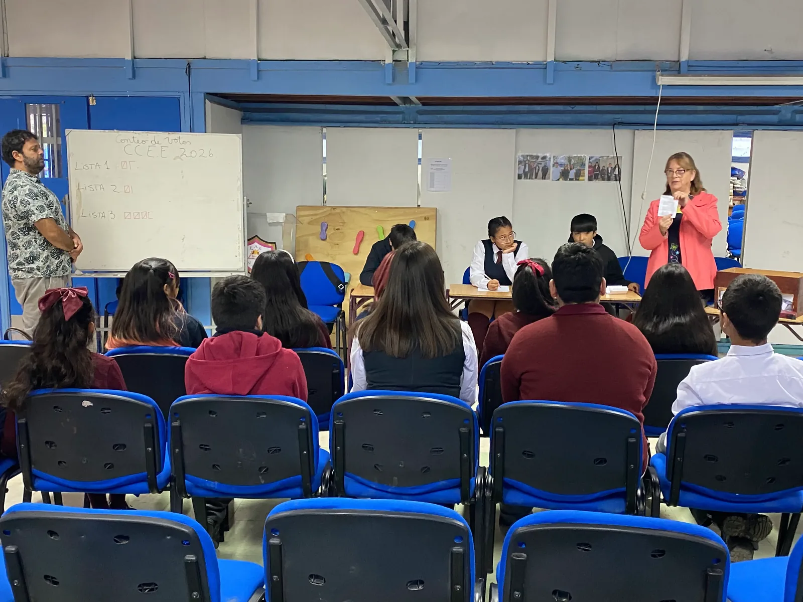
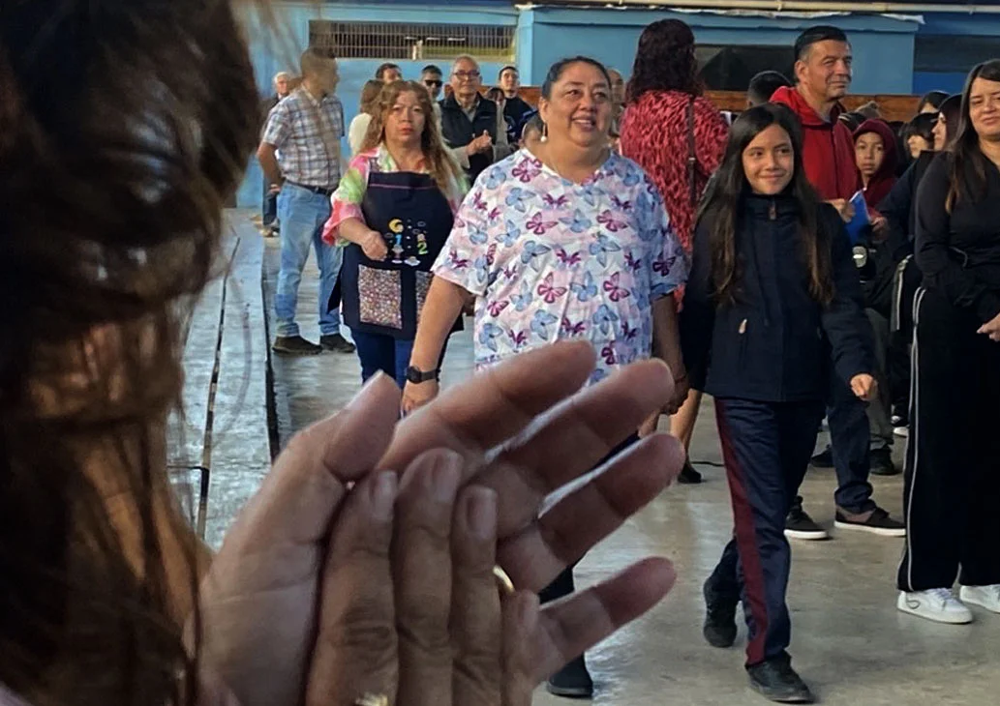
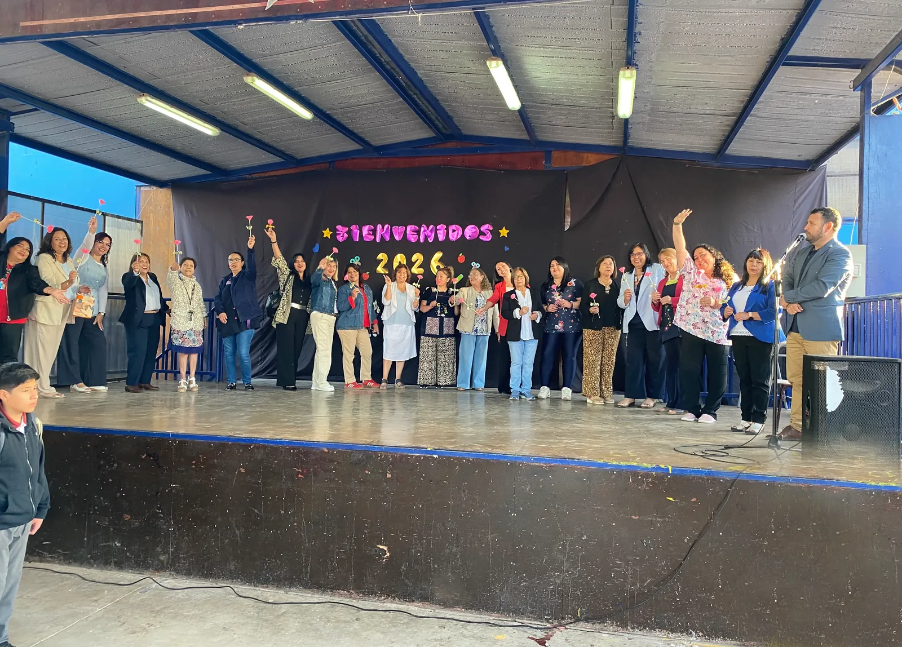
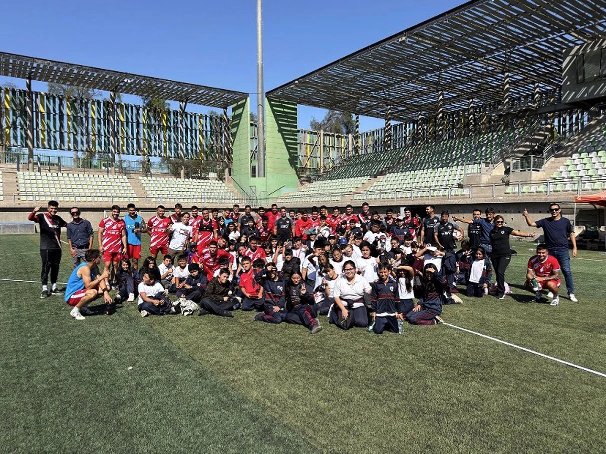

General
Mi Escuela
Noticias
Portada
Elecciones del centro de estudiantes
marzo 18, 2026

Logros
Académico
La comunidad educativa celebra positivos resultados SIMCE
marzo 16, 2026 Redacción

Comunidad
Conmemoración
Las Canteras conmemora el Día de la Mujer con participación de la comunidad
marzo 9, 2026 Redacción

Salida pedagógica
Primer ciclo
Estudiantes del primer ciclo visitaron el estadio Luis Hermosilla
marzo 20, 2026 Redacción